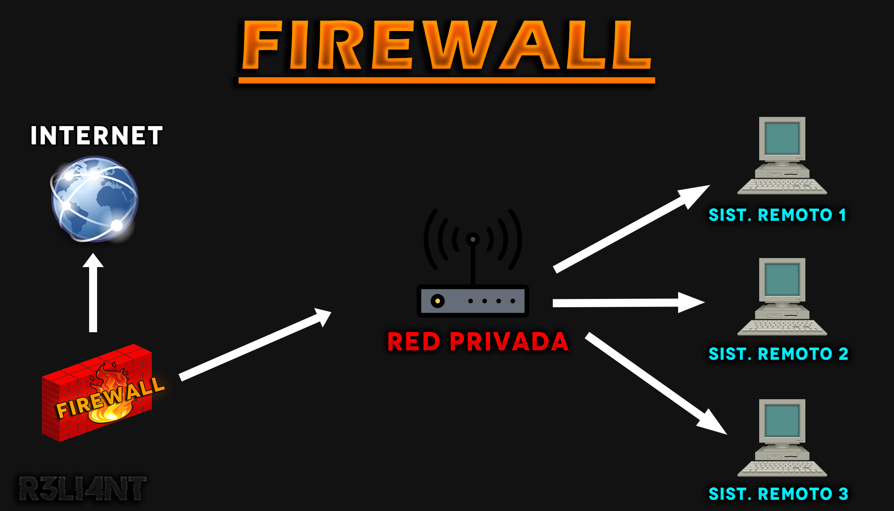

# ¿QUÉ ES UN FIREWALL Y CÓMO FUNCIONA?
Un firewall es un sistema de defensa diseñado en proteger redes privadas de accesos no autorizados y no verificado en una conexión de Internet. Además de limitar los intentos de acceso a determinadas redes, también te protegen contra el malware de sitios web malintencionados o de puertos de red vulnerables, así como también una medida de protección contra ataques Dos/DDoS debido a que regula el tráfico que genera. Los firewall de red se pueden encontrar en redes privadas de empresas, hogares, escuelas, cibercafés; y estos pueden ser de tipo hardware o software, o una combinación de ambos.
-
Firewall de tipo HARDWARE: Los firewalls por hardware son dispositivos electrónicos externos que se colocan en la computadora o red y el modem/router que da acceso a Internet, de manera que le permita controlar las comunicaciones y conexión del lado exterior (entradas y salientes). Se configura generalmente mediante una interfaz de web, el propio usuario del equipo es quien indica que elementos autoriza a ingresar y cuáles no. Su principal ventaja es que no se ejecuta dentro del sistema que protege, por lo que no es fácil de ser manipulado. Por otra parte, un ataque al cortafuegos por hardware produce una caída automática en el dispositivo, lo que bloquea de manera automática el tráfico entrante y saliente hasta que sea reiniciado.
-
Firewall de tipo SOFTWARE: Los firewalls por software son programas que se ejecutan en el sistema o dispositivo y examinan acerca del tráfico de la red para interceptar y prevenir infecciones de programas maliciosos antes de que lleguen a éste. Normalmente suelen ir acompañados de un antivirus u otra arquitectura de firewall más fuerte, a diferencia del hardware, estos ya vienen preconfigurados con lo más básico para proteger las conexiones. No obstante, un cortafuego de tipo software va a recibir mas actualizaciones que de tipo físico debido que es un programa que instalamos y eso le aporta un plus. Además de que si nos traladamos a otro lugar el firewall va a seguir ahí, mientras que al ser físico se encuentra conectado al sistema o router, y por lo tanto, es menos flexible para trasladarlo de un lugar a otro.
Un firewall actúa bloqueando el tráfico no autorizado y cada diseño de implementación se enfocara a las necesidades de cada individuo o empresa en particular. Existen una variedad de métodos que se utilizan para filtrar el tráfico de datos, que pueden ser utilizados individualmente o combinados en un equipo de firewall:
-
Filtrado de contenido: Esta funciona examina los paquetes de comunicación que intentan pasar a través del firewall, comparándolos con las reglas. Las reglas determinan cómo se maneja la comunicación de entrada y salida. Las reglas de ENTRADA controla el tráfico que se permite o deniega de fuentes externas, es decir, conexiones que se generan en Internet y llegan a nuestro equipo. Las regla sde SALIDA controla las conexiones que se genera en nuestro equipo y que tienen como objetivo salir al exterior (Internet). El filtrado de contenido permite a los administradores de redes bloquear fácilmente algunos tipos de contenido web sin tener que proporcionar la URL individualmente, como pueden ser sitios inapropiados o redes sociales, entre otros.
-
Servicio de Anti-Virus a nivel red: Este servicio es una defensa implementada en algunos firewalls para proteger la red interna contra ataques que provengan de Internet o enlace WAN (ordenadores interconectados).
-
Servicio Anti-Spam: Este servicio proteger contra spam, correos phishing y cargados de virus. Utiliza la tecnología de reconocimiento de patrones recurrente (RDP) para analizar y bloquear todos los mensajes infectados en tiempo real. Además, el antispam se aplica a la IP remitente para eliminar y evitar mensajes no deseados.
-
Servicio IDP: El servicio de Prevención de Detección de Intrusos (IDP) permite al administrador controlar aplicaciones específicas como troyanos y backdoors que pueden infiltrarse en la red interna. Utiliza la tecnología de inspección profunda de paquetes DPI (Deep Packet Inspection), añade una capa de seguridad extra y proporciona al administrador la flexibilidad necesaria para bloquear programas específicos no autorizados en la red como el intercambio de archivos P2P o la mensajería instantánea, evitando así el abuso del ancho de banda.
-
Servicio de cliente VPN SSL: Con esta función se logra crear un túnel de comunicación de datos encriptado entre el firewall y el usuario de forma rápida y segura sin tener que implementar un software adicional. La función del software VPN se realiza a través de un programa instalado en el equipo del cliente, con autenticación fuerte, soporta hash SHA-2 512 bits con conexión rápida al ejecutarlo.
-
Gestor de puntos de acceso (AP): Actualmente los firewall tienen implementado un servicio para controlar los dispositivos AP y lograr una mejor conectividad para usuarios autorizados y servicios definidos. La gran demanda de conexiones inalámbricas wifi hicieron que las empresas se enfocarán inmediatamente esta función.

# CONFIGURAR FIREWALL IPFIRE | VMware
IPFire es una distribución de Linux basada en Debian cuya función principal es actuar como un firewall (cortafuegos) y también de router dentro de una red local, hace uso de IPtables para permitir o denegar el tráfico. IPFire se gestiona muy fácilmente con su interfaz web intuitiva sin necesidad entrar vía SSH , sino que desde el propio nevageador web. No requiere de altos requisitos y prácticamente se puede instalar en cualquier ordenador actual, el rendimiento dependerá del hardware utilizado y de las reglas del firewall dependiendo de las necesidades.
Proporciona seguridad en entornos domésticos y pequeñas empresas, su facilidad de configurar previene de posibles intrusos en la red gracias a su sistema de IDS (Sistema de detección de intrusos). IPFire emplea un cortafuegos SPI (Stateful Packet Inspection) basado en IPtables, proporciona anchos de banda superiores a los 10Gbps. Con IPFire podemos configurar el firewall para mitigar y bloquear posibles ataques de denegación de servicio gracias a su interfaz gráfica de usuario, podremos crear host y redes para aplicarle reglas ordenadas. El firewall incorpora redes privadas virtuales para interconectar ubicaciones remotas a través de Internet de forma segura, entre las que se incluyen IPsec y OpenVPN; permitiendo que los usuarios puedan conectarse a ella de forma remota y segura gracias a que las comunicaciones permanecen cifradas de extremo a extremo. Además, otra de las características adicionales es la posibilidad de configurar un servidor Proxy e instalar extensiones populares. Esta basada en web, algunos de sus complementos y funciones adicionales son:
-
DNS Dinámico.
-
Sistemas de detección de intrusiones (IDS).
-
Redes virtuales privadas con IPsec y OpenVPN.
-
Funciones de portal cautivo.
-
Protocolo de configuración dinámica de host (DHCP).
-
Monitorización de sistemas y registro de análisis.
-
Filtrado GeoIP.
Descargar imagen ISO
La descarga y uso de IPfire es completamente gratuita, es tan sencillo como entrar a su web oficial e irnos a la pestaña de Download. En este apartado tendremos que elegir la arquitectura de nuestro equipo, luego procedemos en descargar la imagen ISO para cargarla desde un CD o pendrive.

- https://www.ipfire.org/download/
Luego de crear la máquina e importar la ISO en VMware, hay que añadirle dos adaptadores de red como se observa en la imagen. El primero sirve para la conexión hacia el Internet y el segundo hacia la conexión de la red local.

Iniciamos la máquina y procedemos con la instalación.

Seleccionar el idioma de preferencia.

Aceptamos la licencia de GNU (tecla espacio) y damos enter. Luego borraremos los datos del disco SDA, en caso de que contenga información útil, realizar un respaldo.

El formato del sistema de archivo por defecto es ext4 pero podemos elegir otros, personalmente voy a seleccionar XFS ya que es uno de los mejores para trabajar en el cortafuego en el servidor proxy para ofrecer un mejor rendimiento al disco de almacenamiento de caché.

El sistema comenzará a instalarse.

Nos devuelve un mensaje de que la instalación ha sido finalizada de manera exitosa, también nos muestra el enlace (junto con el puerto 444) para acceder a la configuración pero que podremos cambiarlo más adelante. Reiniciamos el sistema.

Después de reiniciar el sistema entramos a la segunda fase de instalación. Seleccionamos el lenguaje de nuestro teclado.

Especificar el tiempo de zona para el servidor, esto depende de donde este ubicado geográficamente.

Luego le asignamos el nombre de la máquina (hostname), por defecto es ipfire y lo dejaré tal cual está.

Después tenemos que indicarle el nombre del dominio (por defecto es localdomain). El nombre del dominio es para el resto de la red local, es decir, va hacer el sufijo DNS de búsqueda.

Por defecto tendremos dos usuarios: root es el usuario para iniciar sesión en la máquina, y admin es el usuario para administrar el sistema vía web. El siguiente paso será asignar una contraseña para cada uno de ellos, se recomienda siempre utilizar una contraseña compleja.


A continuación debemos de configurar las tarjetas de red. IPfire utiliza colores para identificar diferentes interfaces de red:
| COLOR | RED | DESCRIPCIÓN |
|---|---|---|
| RED | WAN | Conexión hacia el proveedor de Internet (ISP). |
| GREEN | LAN | Conexión hacia la red local. |
| ORANGE | DMZ | Zona desmilitarizada que permite que sus servidores respondan a direcciones IP públicas. |
| BLUE | WLAN | Red inalámbrica, una red separada para clientes inalámbricos. |

En mi caso voy a seleccionar verde y rojo. Luego tenemos que asignar a cada adaptador de red (virtuales en este caso) las dos interfaces.

A continuación configuramos el adaptador RED que, recordemos que es la conexión hacia el Internet.

Y el adaptador GREEN que corresponde a la red interna, actuando así como puerta de enlace de nuestro entorno.

Ya al haber identificado la dirección MAC de cada adaptador, podemos darle en finalizar.

Por último, configuramos la dirección IP para cada interfaz. En la interfaz roja observarán que tenemos tres opciones a elegir, el modo estático es el más recomendado pero para ello nuestro proveedor de Internet nos tiene que entregar los parámetros de la red (dirección IP pública, máscara de red, enlace de salida y los DNS), el modo DHCP asigna de manera automática direcciones de protocolo de Internet (IP) a los equipo de la red, el modo PPP Dial-UP para una conexión a un modem o a una línea ADSL. Como hemos configurado el adaptador VMWare (ya sea por NAT también), será está la opción a escoger.

Para la interfaz verde nos pedirá que asignemos una dirección IP local. Yo utilizaré la IP 192.25.130.254 con una máscara de red de 24 bits (255.255.255.0) para que disponga un tamaño de 254 ordenadores (una IP para cada equipo), en este caso va hacer para el gateway y el DNS (va a disponer de 253 direcciones IP) para el modo de DHCP. Le damos a finalizar para guardar los cambios.

Habilitamos el DHCP y configuramos el rango de inicio (192.25.130.50) y final (192.25.130.200), para el DNS secundario podemos utilizar uno de google (8.8.8.8 o 1.1.1.1), el tiempo de liberación por defecto son 60 minutos pero yo lo voy a cambiar a 5000 minutos y el tiempo máximo de liberación lo voy a cambiar a 10000 minutos. Finalizamos la instalación.

Se comenzará a inicializar todos los servicios.

Se requiere de otro equipo que se encuentre interconectado en la red local para administrar el firewall vía web, para ello voy a levantar una máquina virtual con Kali Linux que ya había creado, de igual manera funciona con Windows. Hay que asegurarse que el adaptador de la segunda máquina sea el mismo que hemos establecido en el firewall (VMnet6 en este caso).

Abrimos una terminal y chequeamos la dirección IP que nos entregó para comprobar diagnósticos de conectividad.


Para ingresar al panel de administración debemos abrir el navegador y escribir la dirección IP del gateway + el puerto por defecto (444), todo esto utilizando el protocolo seguro HTTPS. En mi caso quedaría https://192.25.130.254:444. Las credenciales son las que habíamos establecido al inicio.

Nos saldrá la página inicial de IPFire. Cabe recalcar que este firewall esta hecho para soportar entre 100-150 ordenadores, debido a que esta orientado en administrar redes pequeñas (domésticas, negocios pequeños).

# ➤ Configurar FILTRO DE CONTENIDO
El filtrado de contenido es un sistema empleado para bloquear contenido no deseado de páginas web, en redes públicas (escuelas, universidades) es muy útil para restringir el acceso a contenido explícito, violento, entre otros. Esta acción se lleva a cabo gracias al cumplimiento de dos listas y/o categorías:
-
Lista Blanca: Hace referencia a todos aquellos dominios o URLs que son
permitidospara los usuarios dentro de la misma red local. -
Lista Negra: Hace referencia a todos aquellos dominios o URLs que son
bloqueadospara los usuarios dentro de la misma red local. -
Categorías: Se basa en los filtros que proporciona dichas páginas para bloquear el contenido, es decir, palabras claves que le indiquemos.
Antes de habilitar la función, es preciso instalar la extensión SquidClamav, cuya funcionalidad es proteger el tráfico web de la red. Para ello, accedemos a la pestaña IPFire -> Pakfire y buscaremos dicho elemento. Guardan los cambios.


Accedemos a la pestaña Red -> Web Proxy y activamos las siguientes casillas que se muestra. Guardan los cambios y reinician.
-
[x] Activado en Green.
-
[x] Transparente en Green.
-
[x] SquidClamav Activado.
-
[x] URL filter.
-
[x] Acelerador de actualizaciones.

A continuación, accedemos nuevamente a la pestaña Red -> Filtro de contenido y activamos la casilla de Lista Negra. Dentro de la lista deben escribir todos los dominios o URLs que desean bloquear para aquellos clientes que estén conectados en el área local.

Luego de guardar los cambios, automáticamente se deniega el acceso al dominio y/o URL especificada a los clientes conectados a la misma red local. Para este ejemplo se utilizó otra máquina virtual en donde se configuró el adaptador de red para que el firewall le entregué una dirección IP dentro del rango establecido, esto quiere decir que otro dispositivo externo aún tiene acceso a dicha página.

Dentro de las configuraciones de URL filter se encuentra la opción de activar registros, éste permite tener un control de las peticiones que se han hecho a determinado DNS por parte del destinatario. Para ello, se dirigen nuevamente a Red -> Filtro de contenido.

Luego de guardar los cambios y reiniciar, ingresan a Logs -> Registros de URL Filter y podrán revisar todas las peticiones que se han hecho de una determinada IP.

# ➤ Configurar IP Address Blocklists
Una lista de bloqueos de IP es un sistema de filtrado implementado por el firewall para gestionar aquellas IP's maliciosas, es útil para identificar spammers y/o ciberdelincuentes que estén haciendo mal uso del recurso. Si una dirección IP termina en una lista de bloqueo, ya no puede acceder a la red. Por ejemplo, todos aquellos correos electrónicos que fueron enviados desde esa dirección IP bloqueada, rebotan y no llegan al destinatario.
Por lo general, una dirección IP es bloqueada por su comportamiento ilícito, pero muchas veces se debe a que un atacante esté explotando maliciosamente la IP, o el cliente heredo una IP que ya estaba incluida en alguna lista de bloqueo de IP. Existen diversas razones por la que se agrega una IP a una lista de bloqueo, algunas de ellas son:
-
Spam: abuso de límites de envío diarios.
-
DNS hijacked: el dominio es secuestrado por cibercriminales para acciones ílicitas.
-
Malware: un dispositivo en la red ha sido infectado con un software/código malicioso.
-
Control local: el administrador incluye una lista con aquellas direcciones IP's que tienen permitido acceder a la red, aumentado así la seguridad de la misma y no estar expuestos a ataques cibernéticos (Ej. DoS/DDoS).
Tipos de listas de bloqueo de IP:
-
Listas de bloqueo basadas en correo electrónico: Una lista de bloqueo de correo electrónico funciona como un filtro de correo no deseado, lo que garantiza que los correos electrónicos que son potencialmente peligrosos o no deseados no lleguen al destinatario previsto.
-
Sistema de nombres de dominio/listas de bloqueo basadas en DNS: Una lista de bloqueo basada en DNS funciona haciendo coincidir los nombres de dominio con las direcciones IP que pueden estar involucradas con spam o correos electrónicos posiblemente peligrosos.
-
Listas de bloqueo basadas en phishing: Se crearon listas de bloqueo como las proporcionadas por Google Safe Browsing, PhishTank y OpenPhish para detectar actividades relacionadas con el phishing y el malware en los sitios web.
-
Listas de bloqueo basadas en malware: Cuando un sitio web se bloquea como resultado de un comportamiento dañino, las bases de datos alertan a los webmasters de los sitios marcados sobre la inminente lista de bloqueo de IP.
Aunque la lista de bloqueo es una estrategia efectiva para restringir el acceso de direcciones IP específicas a su red, no está exenta de fallas. Esto se debe al hecho de que los atacantes han ideado una variedad de métodos para eludir las listas de bloqueo. Algunos ejemplos de estas estrategias son los siguientes:
-
Cambio de direcciones IP: Para evitar ser incluidos en la lista de bloqueo, muchos atacantes siguen cambiando sus direcciones IP a través de un VPN o Proxy.
-
Falsificación de IP: Los atacantes pueden emplear la suplantación de IP para que parezca que están conectados a través de una dirección IP diferente en ataques de capa de red (por ejemplo, ataques DDoS). Esto les permite evitar ser incluidos en la lista negra mientras ocultan sus identidades.
-
Botnets: Muchos atacantes utilizan miles o millones de dispositivos de usuario final o dispositivos de Internet de las cosas (IoT) en enormes botnets. Los atacantes hackean los dispositivos y obtienen el control de ellos, o alquilan una botnet. Esto le permtie al atacante asociarse de un ejército zombie de dispositivos dispuestos a atacar mediante ordenes.
El motor de firewall permite la fácil activación de varias listas de bloqueo públicas basadas en IP. Ingresan a la pestaña de Firewall -> IP Address Blocklists.

Todas las listas que se observan se actualizan automáticamente y protegen de diversas amenazas. Las redes y direcciones IP que tienen mala reputación se encuentran en estas listas, sobre todo las que han sido involucradas con el alojamiento de delitos cibernéticos o simplemente no están asignadas. Algunas de las listas no es necesario que sean habilitadas ya que están incluidas en otras, tampoco se recomienda utilizar las listas de Tor si se está usando Tor. Cualquier tipo de amenaza detectada a tiempo será registrada e informada en la pestaña Firewall -> IP Address Blocklists Logs.


# ➤ Configurar IPFire vía SSH
El protocolo SSH permite al usuario el acceso remoto con el servidor para realizar modificaciones o cambios en él. Para habilitar esta opción es preciso activar la casilla de verificación en la pestaña de Sistema -> Acceso SSH.

Habilitar el reenvío del agente SSH permite el uso de una clave SSH local privada de forma remota sin dejar datos confidenciales en el servidor. El reenvío de puertos TCP permite que otras aplicaciones TCP reenvíen sus datos de red a través de una conexión SSH segura. La autenticación basada en contraseña permite inciar sesión con con ID y contraseña para acceder a SSH. La autenticación basada en clave pública se útil para autenticar al servidor (hosts) y el cliente (usuario), el cifrado de clave pública utiliza llaves públicas y privadas para cifrar y descifrar datos; una de estas claves es pública y se puede distribuir libremente, mientras que la clave privada debe almacenarse en un lugar seguro. Los datos de está solo se puede descifrar con la clave pública y los datos cifrados con la clave pública sólo pueden descifrarse con la clave privada.
Acceder al servidor mediante SSH (puerto 22):
$ ssh root@ipfire.localdomain
Por motivos de seguridad se recomienda conectarse por el puerto 222. Para esto, deshabilite la casilla de "El puerto SSH se ha establecido en 22 (por defecto es 222)".

$ ssh -p 222 root@ipfire.localdomain
Acceder mediante clave pública SSH, activar la casilla de "Permitir autenticación basada en llave pública".

Generar clave para SSH sin contraseña, en el nombre del directorio .ssh.
$ ssh-keygen -f ~/.ssh/id_rsa -P ''
Luego copie la clave pública de la computadora cliente al IPFire:
$ ssh-copy-id -p 222 root@ipfire.localdomain
La nueva clave de cliente se agrego a las claves autorizadas existentes. Para acceder a IPFire, habilite SSH temporalmente haciendo clic en Detener el demonio SSH en 15 minutos e ingresando:
$ ssh -p '222' 'root@ipfire' 
# ➤ Configurar Web Proxy Avanzado
Los servidores proxy se utilizan como un mecanismo de protección adicional o para la optimización de ancho de banda y velocidad. IPFire utiliza el paquete Squid-web-proxy para fines de registro y control de acceso con listas blancas/negras. Squid maneja tanto HTTP como HTTPS y FTP sobre HTTP. Anteriormente ya habíamos instalado Squid desde la pestaña de IPFire -> Pakfire.

Squid se ha optimizado para ser muy seguro, por lo que se ha eliminado el soporte SSL, manejando así conexiones HTTPS entre el cliente y el servidor sin intentar descifrar los bits que se envían. Para habilitarlo se deben dirigir a la pestaña de Red -> Web Proxy y marcar las casillas que se ven a continuación:

Desde el navegador web accedemos a las configuraciones de red, seguidamente introducimos la configuración manual del proxy (utiliza el puerto 800 por defecto).

Al acceder al panel de administración del proxy quedaría de la siguiente manera: https://192.25.130.254:800/.

# CONFIGURAR FIREWALL IPFIRE | VirtualBox
En la configuración de la máquina en VirtualBox le agregamos dos adaptadores de red al firewall como lo hemos hecho con VMWare al principio. Los pasos de instalación de IPFire son los mismos.

# Detalles
Información adicional
-
Wiki oficial de IPFire: https://wiki.ipfire.org/
-
Foro (comunidad) de IPFire: https://community.ipfire.org/